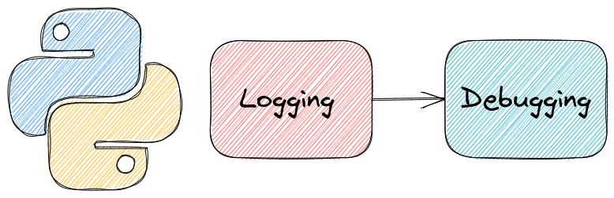
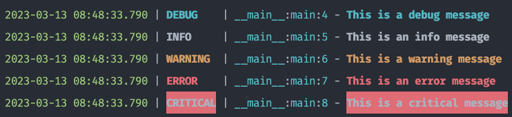
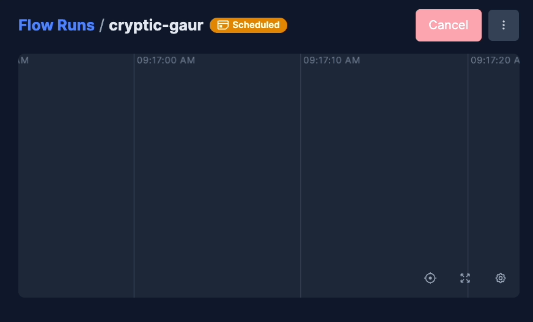

7.4. Logging and Debugging#

Collections of tools for logging and debugging Python code.
7.4.1. rich.inspect: Produce a Beautiful Report on any Python Object#
Show code cell content
!pip install rich
Requirement already satisfied: rich in /Users/khuyentran/book/venv/lib/python3.11/site-packages (13.7.1)
Requirement already satisfied: markdown-it-py>=2.2.0 in /Users/khuyentran/book/venv/lib/python3.11/site-packages (from rich) (2.2.0)
Requirement already satisfied: pygments<3.0.0,>=2.13.0 in /Users/khuyentran/book/venv/lib/python3.11/site-packages (from rich) (2.16.1)
Requirement already satisfied: mdurl~=0.1 in /Users/khuyentran/book/venv/lib/python3.11/site-packages (from markdown-it-py>=2.2.0->rich) (0.1.2)
If you want to quickly see which attributes and methods of a Python object are available, use rich’s inspect method.
rich’s inspect method allows you to create a beautiful report for any Python object, including a string.
from rich import inspect
print(inspect('hello', methods=True))
╭───────────────────────────────────────────────── <class 'str'> ─────────────────────────────────────────────────╮ │ str(object='') -> str │ │ str(bytes_or_buffer[, encoding[, errors]]) -> str │ │ │ │ ╭─────────────────────────────────────────────────────────────────────────────────────────────────────────────╮ │ │ │ 'hello' │ │ │ ╰─────────────────────────────────────────────────────────────────────────────────────────────────────────────╯ │ │ │ │ capitalize = def capitalize(): Return a capitalized version of the string. │ │ casefold = def casefold(): Return a version of the string suitable for caseless comparisons. │ │ center = def center(width, fillchar=' ', /): Return a centered string of length width. │ │ count = def count(...) S.count(sub[, start[, end]]) -> int │ │ encode = def encode(encoding='utf-8', errors='strict'): Encode the string using the codec registered for │ │ encoding. │ │ endswith = def endswith(...) S.endswith(suffix[, start[, end]]) -> bool │ │ expandtabs = def expandtabs(tabsize=8): Return a copy where all tab characters are expanded using spaces. │ │ find = def find(...) S.find(sub[, start[, end]]) -> int │ │ format = def format(...) S.format(*args, **kwargs) -> str │ │ format_map = def format_map(...) S.format_map(mapping) -> str │ │ index = def index(...) S.index(sub[, start[, end]]) -> int │ │ isalnum = def isalnum(): Return True if the string is an alpha-numeric string, False otherwise. │ │ isalpha = def isalpha(): Return True if the string is an alphabetic string, False otherwise. │ │ isascii = def isascii(): Return True if all characters in the string are ASCII, False otherwise. │ │ isdecimal = def isdecimal(): Return True if the string is a decimal string, False otherwise. │ │ isdigit = def isdigit(): Return True if the string is a digit string, False otherwise. │ │ isidentifier = def isidentifier(): Return True if the string is a valid Python identifier, False otherwise. │ │ islower = def islower(): Return True if the string is a lowercase string, False otherwise. │ │ isnumeric = def isnumeric(): Return True if the string is a numeric string, False otherwise. │ │ isprintable = def isprintable(): Return True if the string is printable, False otherwise. │ │ isspace = def isspace(): Return True if the string is a whitespace string, False otherwise. │ │ istitle = def istitle(): Return True if the string is a title-cased string, False otherwise. │ │ isupper = def isupper(): Return True if the string is an uppercase string, False otherwise. │ │ join = def join(iterable, /): Concatenate any number of strings. │ │ ljust = def ljust(width, fillchar=' ', /): Return a left-justified string of length width. │ │ lower = def lower(): Return a copy of the string converted to lowercase. │ │ lstrip = def lstrip(chars=None, /): Return a copy of the string with leading whitespace removed. │ │ maketrans = def maketrans(...) Return a translation table usable for str.translate(). │ │ partition = def partition(sep, /): Partition the string into three parts using the given separator. │ │ removeprefix = def removeprefix(prefix, /): Return a str with the given prefix string removed if present. │ │ removesuffix = def removesuffix(suffix, /): Return a str with the given suffix string removed if present. │ │ replace = def replace(old, new, count=-1, /): Return a copy with all occurrences of substring old replaced │ │ by new. │ │ rfind = def rfind(...) S.rfind(sub[, start[, end]]) -> int │ │ rindex = def rindex(...) S.rindex(sub[, start[, end]]) -> int │ │ rjust = def rjust(width, fillchar=' ', /): Return a right-justified string of length width. │ │ rpartition = def rpartition(sep, /): Partition the string into three parts using the given separator. │ │ rsplit = def rsplit(sep=None, maxsplit=-1): Return a list of the substrings in the string, using sep as │ │ the separator string. │ │ rstrip = def rstrip(chars=None, /): Return a copy of the string with trailing whitespace removed. │ │ split = def split(sep=None, maxsplit=-1): Return a list of the substrings in the string, using sep as │ │ the separator string. │ │ splitlines = def splitlines(keepends=False): Return a list of the lines in the string, breaking at line │ │ boundaries. │ │ startswith = def startswith(...) S.startswith(prefix[, start[, end]]) -> bool │ │ strip = def strip(chars=None, /): Return a copy of the string with leading and trailing whitespace │ │ removed. │ │ swapcase = def swapcase(): Convert uppercase characters to lowercase and lowercase characters to uppercase. │ │ title = def title(): Return a version of the string where each word is titlecased. │ │ translate = def translate(table, /): Replace each character in the string using the given translation table. │ │ upper = def upper(): Return a copy of the string converted to uppercase. │ │ zfill = def zfill(width, /): Pad a numeric string with zeros on the left, to fill a field of the given │ │ width. │ ╰─────────────────────────────────────────────────────────────────────────────────────────────────────────────────╯
None
7.4.2. Rich’s Console: Debug your Python Function in One Line of Code#
Show code cell content
!pip install rich
Requirement already satisfied: rich in /Users/khuyentran/book/venv/lib/python3.11/site-packages (13.7.1)
Requirement already satisfied: markdown-it-py>=2.2.0 in /Users/khuyentran/book/venv/lib/python3.11/site-packages (from rich) (2.2.0)
Requirement already satisfied: pygments<3.0.0,>=2.13.0 in /Users/khuyentran/book/venv/lib/python3.11/site-packages (from rich) (2.16.1)
Requirement already satisfied: mdurl~=0.1 in /Users/khuyentran/book/venv/lib/python3.11/site-packages (from markdown-it-py>=2.2.0->rich) (0.1.2)
Sometimes, you might want to know which elements in the function created a certain output. Instead of printing every variable in the function, you can simply use Rich’s Console object to print both the output and all the variables in the function.
from rich import console
from rich.console import Console
import pandas as pd
console = Console()
data = pd.DataFrame({'a': [1, 2, 3], 'b': [4, 5, 6]})
def edit_data(data):
var_1 = 45
var_2 = 30
var_3 = var_1 + var_2
data['a'] = [var_1, var_2, var_3]
console.log(data, log_locals=True)
edit_data(data)
[18:10:38] a b 1165738010.py:14 0 45 4 1 30 5 2 75 6 ╭───── locals ─────╮ │ data = a b │ │ 0 45 4 │ │ 1 30 5 │ │ 2 75 6 │ │ var_1 = 45 │ │ var_2 = 30 │ │ var_3 = 75 │ ╰──────────────────╯
7.4.3. Simplify Python Logging with Loguru#
Have you ever found yourself using print() instead of a proper logger due to the hassle of setup?
With Loguru, you can get started with logging right away. A single import is all you need to begin logging with pre-configured color and format settings.
Here is the comparison between the standard Python logging library and Loguru:
Standard Python logging library:
# loguru_vs_logging/logging_example.py
import logging
logging.basicConfig(format='%(asctime)s | %(levelname)s | %(module)s:%(funcName)s:%(lineno)d | %(message)s', level=logging.DEBUG)
def main():
logging.debug('This is a debug message')
logging.info('This is an info message')
logging.warning('This is a warning message')
logging.error('This is an error message')
logging.critical('This is a critical message')
if __name__ == '__main__':
main()
$ python loguru_vs_logging/logging_example.py
2023-03-13 08:46:30,802 | DEBUG | logging_example:main:6 | This is a debug message
2023-03-13 08:46:30,802 | INFO | logging_example:main:7 | This is an info message
2023-03-13 08:46:30,802 | WARNING | logging_example:main:8 | This is a warning message
2023-03-13 08:46:30,802 | ERROR | logging_example:main:9 | This is an error message
2023-03-13 08:46:30,802 | CRITICAL | logging_example:main:10 | This is a critical message
Loguru:
# loguru_vs_logging/loguru_example.py
from loguru import logger
def main():
logger.debug("This is a debug message")
logger.info("This is an info message")
logger.warning("This is a warning message")
logger.error("This is an error message")
logger.critical("This is a critical message")
if __name__ == '__main__':
main()
$ python loguru_vs_logging/loguru_example.py

7.4.4. loguru: Print Readable Traceback in Python#
Show code cell content
!pip install loguru
Collecting loguru
Downloading loguru-0.7.2-py3-none-any.whl.metadata (23 kB)
Downloading loguru-0.7.2-py3-none-any.whl (62 kB)
Installing collected packages: loguru
Successfully installed loguru-0.7.2
Loguru also allows you to print a readable traceback by adding decorator logger.catch to a function.
from sklearn.metrics import mean_squared_error
import numpy as np
from loguru import logger
logger.add("file_{time}.log", format="{time} {level} {message}")
@logger.catch
def evaluate_result(y_true: np.array, y_pred: np.array):
mean_square_err = mean_squared_error(y_true, y_pred)
root_mean_square_err = mean_square_err ** 0.5
y_true = np.array([1, 2, 3])
y_pred = np.array([1.5, 2.2])
evaluate_result(y_true, y_pred)
Show code cell output
2024-08-12 18:10:41.329 | ERROR | __main__:<module>:14 - An error has been caught in function '<module>', process 'MainProcess' (31530), thread 'MainThread' (8332868224):
Traceback (most recent call last):
File "<frozen runpy>", line 198, in _run_module_as_main
File "<frozen runpy>", line 88, in _run_code
File "/Users/khuyentran/book/venv/lib/python3.11/site-packages/ipykernel_launcher.py", line 17, in <module>
app.launch_new_instance()
│ └ <bound method Application.launch_instance of <class 'ipykernel.kernelapp.IPKernelApp'>>
└ <module 'ipykernel.kernelapp' from '/Users/khuyentran/book/venv/lib/python3.11/site-packages/ipykernel/kernelapp.py'>
File "/Users/khuyentran/book/venv/lib/python3.11/site-packages/traitlets/config/application.py", line 1053, in launch_instance
app.start()
│ └ <function IPKernelApp.start at 0x107d28860>
└ <ipykernel.kernelapp.IPKernelApp object at 0x104cdf1d0>
File "/Users/khuyentran/book/venv/lib/python3.11/site-packages/ipykernel/kernelapp.py", line 737, in start
self.io_loop.start()
│ │ └ <function BaseAsyncIOLoop.start at 0x107d29760>
│ └ <tornado.platform.asyncio.AsyncIOMainLoop object at 0x107d3fc90>
└ <ipykernel.kernelapp.IPKernelApp object at 0x104cdf1d0>
File "/Users/khuyentran/book/venv/lib/python3.11/site-packages/tornado/platform/asyncio.py", line 195, in start
self.asyncio_loop.run_forever()
│ │ └ <function BaseEventLoop.run_forever at 0x105c9fb00>
│ └ <_UnixSelectorEventLoop running=True closed=False debug=False>
└ <tornado.platform.asyncio.AsyncIOMainLoop object at 0x107d3fc90>
File "/opt/homebrew/Cellar/python@3.11/3.11.6_1/Frameworks/Python.framework/Versions/3.11/lib/python3.11/asyncio/base_events.py", line 607, in run_forever
self._run_once()
│ └ <function BaseEventLoop._run_once at 0x105ca1940>
└ <_UnixSelectorEventLoop running=True closed=False debug=False>
File "/opt/homebrew/Cellar/python@3.11/3.11.6_1/Frameworks/Python.framework/Versions/3.11/lib/python3.11/asyncio/base_events.py", line 1922, in _run_once
handle._run()
│ └ <function Handle._run at 0x105c32840>
└ <Handle Task.task_wakeup(<Future finis...6d0>, ...],))>)>
File "/opt/homebrew/Cellar/python@3.11/3.11.6_1/Frameworks/Python.framework/Versions/3.11/lib/python3.11/asyncio/events.py", line 80, in _run
self._context.run(self._callback, *self._args)
│ │ │ │ │ └ <member '_args' of 'Handle' objects>
│ │ │ │ └ <Handle Task.task_wakeup(<Future finis...6d0>, ...],))>)>
│ │ │ └ <member '_callback' of 'Handle' objects>
│ │ └ <Handle Task.task_wakeup(<Future finis...6d0>, ...],))>)>
│ └ <member '_context' of 'Handle' objects>
└ <Handle Task.task_wakeup(<Future finis...6d0>, ...],))>)>
File "/Users/khuyentran/book/venv/lib/python3.11/site-packages/ipykernel/kernelbase.py", line 524, in dispatch_queue
await self.process_one()
│ └ <function Kernel.process_one at 0x1077f2fc0>
└ <ipykernel.ipkernel.IPythonKernel object at 0x107d40a50>
File "/Users/khuyentran/book/venv/lib/python3.11/site-packages/ipykernel/kernelbase.py", line 513, in process_one
await dispatch(*args)
│ └ ([<zmq.sugar.frame.Frame object at 0x10848d250>, <zmq.sugar.frame.Frame object at 0x10848d610>, <zmq.sugar.frame.Frame object...
└ <bound method Kernel.dispatch_shell of <ipykernel.ipkernel.IPythonKernel object at 0x107d40a50>>
File "/Users/khuyentran/book/venv/lib/python3.11/site-packages/ipykernel/kernelbase.py", line 418, in dispatch_shell
await result
└ <coroutine object Kernel.execute_request at 0x107a77320>
File "/Users/khuyentran/book/venv/lib/python3.11/site-packages/ipykernel/kernelbase.py", line 758, in execute_request
reply_content = await reply_content
└ <coroutine object IPythonKernel.do_execute at 0x107a71240>
File "/Users/khuyentran/book/venv/lib/python3.11/site-packages/ipykernel/ipkernel.py", line 426, in do_execute
res = shell.run_cell(
│ └ <function ZMQInteractiveShell.run_cell at 0x107d15c60>
└ <ipykernel.zmqshell.ZMQInteractiveShell object at 0x107d68490>
File "/Users/khuyentran/book/venv/lib/python3.11/site-packages/ipykernel/zmqshell.py", line 549, in run_cell
return super().run_cell(*args, **kwargs)
│ └ {'store_history': True, 'silent': False, 'cell_id': 'vscode-notebook-cell:/Users/khuyentran/book/Efficient_Python_tricks_and_...
└ ('from sklearn.metrics import mean_squared_error\nimport numpy as np\nfrom loguru import logger\n\nlogger.add("file_{time}.lo...
File "/Users/khuyentran/book/venv/lib/python3.11/site-packages/IPython/core/interactiveshell.py", line 3024, in run_cell
result = self._run_cell(
│ └ <function InteractiveShell._run_cell at 0x106bc3ce0>
└ <ipykernel.zmqshell.ZMQInteractiveShell object at 0x107d68490>
File "/Users/khuyentran/book/venv/lib/python3.11/site-packages/IPython/core/interactiveshell.py", line 3079, in _run_cell
result = runner(coro)
│ └ <coroutine object InteractiveShell.run_cell_async at 0x1086c18a0>
└ <function _pseudo_sync_runner at 0x106baae80>
File "/Users/khuyentran/book/venv/lib/python3.11/site-packages/IPython/core/async_helpers.py", line 129, in _pseudo_sync_runner
coro.send(None)
│ └ <method 'send' of 'coroutine' objects>
└ <coroutine object InteractiveShell.run_cell_async at 0x1086c18a0>
File "/Users/khuyentran/book/venv/lib/python3.11/site-packages/IPython/core/interactiveshell.py", line 3284, in run_cell_async
has_raised = await self.run_ast_nodes(code_ast.body, cell_name,
│ │ │ │ └ '/var/folders/5w/fg65_rp17lz39z89p0nkv8ch0000gn/T/ipykernel_31530/1455742643.py'
│ │ │ └ [<ast.ImportFrom object at 0x10881c0d0>, <ast.Import object at 0x10881f310>, <ast.ImportFrom object at 0x10881fc10>, <ast.Exp...
│ │ └ <ast.Module object at 0x10881f5b0>
│ └ <function InteractiveShell.run_ast_nodes at 0x106bc8040>
└ <ipykernel.zmqshell.ZMQInteractiveShell object at 0x107d68490>
File "/Users/khuyentran/book/venv/lib/python3.11/site-packages/IPython/core/interactiveshell.py", line 3466, in run_ast_nodes
if await self.run_code(code, result, async_=asy):
│ │ │ │ └ False
│ │ │ └ <ExecutionResult object at 108825410, execution_count=10 error_before_exec=None error_in_exec=None info=<ExecutionInfo object...
│ │ └ <code object <module> at 0x17346b750, file "/var/folders/5w/fg65_rp17lz39z89p0nkv8ch0000gn/T/ipykernel_31530/1455742643.py", ...
│ └ <function InteractiveShell.run_code at 0x106bc80e0>
└ <ipykernel.zmqshell.ZMQInteractiveShell object at 0x107d68490>
File "/Users/khuyentran/book/venv/lib/python3.11/site-packages/IPython/core/interactiveshell.py", line 3526, in run_code
exec(code_obj, self.user_global_ns, self.user_ns)
│ │ │ │ └ {'__name__': '__main__', '__doc__': 'Automatically created module for IPython interactive environment', '__package__': None, ...
│ │ │ └ <ipykernel.zmqshell.ZMQInteractiveShell object at 0x107d68490>
│ │ └ <property object at 0x106ba3830>
│ └ <ipykernel.zmqshell.ZMQInteractiveShell object at 0x107d68490>
└ <code object <module> at 0x17346b750, file "/var/folders/5w/fg65_rp17lz39z89p0nkv8ch0000gn/T/ipykernel_31530/1455742643.py", ...
> File "/var/folders/5w/fg65_rp17lz39z89p0nkv8ch0000gn/T/ipykernel_31530/1455742643.py", line 14, in <module>
evaluate_result(y_true, y_pred)
│ │ └ array([1.5, 2.2])
│ └ array([1, 2, 3])
└ <function evaluate_result at 0x172e23e20>
File "/var/folders/5w/fg65_rp17lz39z89p0nkv8ch0000gn/T/ipykernel_31530/1455742643.py", line 9, in evaluate_result
mean_square_err = mean_squared_error(y_true, y_pred)
│ │ └ array([1.5, 2.2])
│ └ array([1, 2, 3])
└ <function mean_squared_error at 0x173478180>
File "/Users/khuyentran/book/venv/lib/python3.11/site-packages/sklearn/utils/_param_validation.py", line 213, in wrapper
return func(*args, **kwargs)
│ │ └ {}
│ └ (array([1, 2, 3]), array([1.5, 2.2]))
└ <function mean_squared_error at 0x1734780e0>
File "/Users/khuyentran/book/venv/lib/python3.11/site-packages/sklearn/metrics/_regression.py", line 497, in mean_squared_error
y_type, y_true, y_pred, multioutput = _check_reg_targets(
│ │ └ <function _check_reg_targets at 0x173457ba0>
│ └ array([1.5, 2.2])
└ array([1, 2, 3])
File "/Users/khuyentran/book/venv/lib/python3.11/site-packages/sklearn/metrics/_regression.py", line 102, in _check_reg_targets
check_consistent_length(y_true, y_pred)
│ │ └ array([1.5, 2.2])
│ └ array([1, 2, 3])
└ <function check_consistent_length at 0x172e205e0>
File "/Users/khuyentran/book/venv/lib/python3.11/site-packages/sklearn/utils/validation.py", line 457, in check_consistent_length
raise ValueError(
ValueError: Found input variables with inconsistent numbers of samples: [3, 2]
Try wat / object or wat.modifiers / object to inspect an object. Modifiers are:
.short or .s to hide attributes (variables and methods)
.dunder to print dunder attributes
.code to print source code of a function, method or class
.long to print non-abbreviated values and documentation
.nodocs to hide documentation for functions and classes
.all to include all information
.ret to return the inspected object
.str to return the output string instead of printing
.gray to disable colorful output in the console
Call wat.locals or wat() to inspect local variables.
Call wat.globals to inspect global variables.
Try wat / object or wat.modifiers / object to inspect an object. Modifiers are:
.short or .s to hide attributes (variables and methods)
.dunder to print dunder attributes
.code to print source code of a function, method or class
.long to print non-abbreviated values and documentation
.nodocs to hide documentation for functions and classes
.all to include all information
.ret to return the inspected object
.str to return the output string instead of printing
.gray to disable colorful output in the console
Call wat.locals or wat() to inspect local variables.
Call wat.globals to inspect global variables.
> File "/tmp/ipykernel_174022/1865479429.py", line 14, in <module>
evaluate_result(y_true, y_pred)
│ │ └ array([1.5, 2.2])
│ └ array([1, 2, 3])
└ <function evaluate_result at 0x7f279588f430>
File "/tmp/ipykernel_174022/1865479429.py", line 9, in evaluate_result
mean_square_err = mean_squared_error(y_true, y_pred)
│ │ └ array([1.5, 2.2])
│ └ array([1, 2, 3])
└ <function mean_squared_error at 0x7f27958bfca0>
File "/home/khuyen/book/venv/lib/python3.8/site-packages/sklearn/utils/validation.py", line 63, in inner_f
return f(*args, **kwargs)
│ │ └ {}
│ └ (array([1, 2, 3]), array([1.5, 2.2]))
└ <function mean_squared_error at 0x7f27958bfb80>
File "/home/khuyen/book/venv/lib/python3.8/site-packages/sklearn/metrics/_regression.py", line 335, in mean_squared_error
y_type, y_true, y_pred, multioutput = _check_reg_targets(
│ │ └ <function _check_reg_targets at 0x7f27958b7af0>
│ └ array([1.5, 2.2])
└ array([1, 2, 3])
File "/home/khuyen/book/venv/lib/python3.8/site-packages/sklearn/metrics/_regression.py", line 88, in _check_reg_targets
check_consistent_length(y_true, y_pred)
│ │ └ array([1.5, 2.2])
│ └ array([1, 2, 3])
└ <function check_consistent_length at 0x7f279676e040>
File "/home/khuyen/book/venv/lib/python3.8/site-packages/sklearn/utils/validation.py", line 319, in check_consistent_length
raise ValueError("Found input variables with inconsistent numbers of"
ValueError: Found input variables with inconsistent numbers of samples: [3, 2]
7.4.5. Icecream: Never use print() to debug again#
Show code cell content
!pip install icecream
Collecting icecream
Downloading icecream-2.1.3-py2.py3-none-any.whl.metadata (1.4 kB)
Requirement already satisfied: colorama>=0.3.9 in /Users/khuyentran/book/venv/lib/python3.11/site-packages (from icecream) (0.4.6)
Requirement already satisfied: pygments>=2.2.0 in /Users/khuyentran/book/venv/lib/python3.11/site-packages (from icecream) (2.16.1)
Requirement already satisfied: executing>=0.3.1 in /Users/khuyentran/book/venv/lib/python3.11/site-packages (from icecream) (2.0.0)
Requirement already satisfied: asttokens>=2.0.1 in /Users/khuyentran/book/venv/lib/python3.11/site-packages (from icecream) (2.4.0)
Requirement already satisfied: six>=1.12.0 in /Users/khuyentran/book/venv/lib/python3.11/site-packages (from asttokens>=2.0.1->icecream) (1.16.0)
Downloading icecream-2.1.3-py2.py3-none-any.whl (8.4 kB)
Installing collected packages: icecream
Successfully installed icecream-2.1.3
If you use print or log to debug your code, you might be confused about which line of code creates the output, especially when there are many outputs.
You might insert text to make it less confusing, but it is time-consuming.
from icecream import ic
def plus_one(num):
return num + 1
print('output of plus_on with num = 1:', plus_one(1))
print('output of plus_on with num = 2:', plus_one(2))
output of plus_on with num = 1: 2
output of plus_on with num = 2: 3
Try icecream instead. Icrecream inspects itself and prints both its own arguments and the values of those arguments like below.
ic(plus_one(1))
ic(plus_one(2))
Show code cell output
ic| plus_one(1): 2
ic| plus_one(2): 3
3
Output:
ic| plus_one(1): 2
ic| plus_one(2): 3
7.4.6. heartrate — Visualize the Execution of a Python Program in Real-Time#
Show code cell content
!pip install heartrate
Collecting heartrate
Downloading heartrate-0.2.2.tar.gz (239 kB)
Preparing metadata (setup.py) ... ?25ldone
?25hRequirement already satisfied: pygments in /Users/khuyentran/book/venv/lib/python3.11/site-packages (from heartrate) (2.16.1)
Requirement already satisfied: Flask in /Users/khuyentran/book/venv/lib/python3.11/site-packages (from heartrate) (3.0.0)
Requirement already satisfied: executing in /Users/khuyentran/book/venv/lib/python3.11/site-packages (from heartrate) (2.0.0)
Requirement already satisfied: asttokens in /Users/khuyentran/book/venv/lib/python3.11/site-packages (from heartrate) (2.4.0)
Requirement already satisfied: six>=1.12.0 in /Users/khuyentran/book/venv/lib/python3.11/site-packages (from asttokens->heartrate) (1.16.0)
Requirement already satisfied: Werkzeug>=3.0.0 in /Users/khuyentran/book/venv/lib/python3.11/site-packages (from Flask->heartrate) (3.0.1)
Requirement already satisfied: Jinja2>=3.1.2 in /Users/khuyentran/book/venv/lib/python3.11/site-packages (from Flask->heartrate) (3.1.2)
Requirement already satisfied: itsdangerous>=2.1.2 in /Users/khuyentran/book/venv/lib/python3.11/site-packages (from Flask->heartrate) (2.1.2)
Requirement already satisfied: click>=8.1.3 in /Users/khuyentran/book/venv/lib/python3.11/site-packages (from Flask->heartrate) (8.1.7)
Requirement already satisfied: blinker>=1.6.2 in /Users/khuyentran/book/venv/lib/python3.11/site-packages (from Flask->heartrate) (1.7.0)
Requirement already satisfied: MarkupSafe>=2.0 in /Users/khuyentran/book/venv/lib/python3.11/site-packages (from Jinja2>=3.1.2->Flask->heartrate) (2.1.3)
Building wheels for collected packages: heartrate
Building wheel for heartrate (setup.py) ... ?25ldone
?25h Created wheel for heartrate: filename=heartrate-0.2.2-py3-none-any.whl size=235994 sha256=23d469a3676f399435ed1581b0da936ef614a134749520be801eb96aadeb19b6
Stored in directory: /Users/khuyentran/Library/Caches/pip/wheels/ce/2f/bb/26835a451cc11eb8d362d2d2b2c322220c6d61edc825233820
Successfully built heartrate
Installing collected packages: heartrate
Successfully installed heartrate-0.2.2
If you want to visualize which lines are executed and how many times they are executed, try heartrate.
You only need to add two lines of code to use heartrate.
import heartrate
heartrate.trace(browser=True)
def factorial(x):
if x == 1:
return 1
else:
return (x * factorial(x-1))
if __name__ == "__main__":
num = 5
print(f"The factorial of {num} is {factorial(num)}")
Show code cell output
* Serving Flask app 'heartrate.core'
* Debug mode: off
The factorial of 5 is 120
You should see something similar to the below when opening the browser:

7.4.7. pyheat: Simplify Code Profiling with Heatmap Visualization#
Show code cell content
!pip install py-heat
Collecting py-heat
Downloading py-heat-0.0.6.tar.gz (7.1 kB)
Preparing metadata (setup.py) ... ?25l-^C
ERROR: Operation cancelled by user
Profiling your code is helpful, but looking at data in a table can be a real headache. Wouldn’t it be nice if you could see your code’s time distribution as a heatmap? That is when pyheat comes in handy.
%%writefile pyheat_example.py
def factorial(x):
if x == 1:
return 1
else:
return (x * factorial(x-1))
if __name__ == "__main__":
num = 5
factorial(num)
Writing pyheat_example.py
from pyheat import PyHeat
ph = PyHeat("pyheat_example.py") # file you want to profile
ph.create_heatmap()
ph.show_heatmap()

7.4.8. snoop : Smart Print to Debug your Python Function#
Show code cell content
!pip install snoop
If you want to figure out what is happening in your code without adding many print statements, try snoop.
To use snoop, simply add the @snoop decorator to a function you want to understand.
import snoop
@snoop
def factorial(x):
if x == 1:
return 1
else:
return (x * factorial(x-1))
if __name__ == "__main__":
num = 5
print(f"The factorial of {num} is {factorial(num)}")
10:19:00.73 >>> Call to factorial in File "<ipython-input-2-57aff36d5f6d>", line 4
10:19:00.73 ...... x = 5
10:19:00.73 4 | def factorial(x):
10:19:00.73 5 | if x == 1:
10:19:00.73 8 | return (x * factorial(x-1))
10:19:00.74 >>> Call to factorial in File "<ipython-input-2-57aff36d5f6d>", line 4
10:19:00.74 ...... x = 4
10:19:00.74 4 | def factorial(x):
10:19:00.74 5 | if x == 1:
10:19:00.74 8 | return (x * factorial(x-1))
10:19:00.74 >>> Call to factorial in File "<ipython-input-2-57aff36d5f6d>", line 4
10:19:00.74 ...... x = 3
10:19:00.74 4 | def factorial(x):
10:19:00.74 5 | if x == 1:
10:19:00.75 8 | return (x * factorial(x-1))
10:19:00.75 >>> Call to factorial in File "<ipython-input-2-57aff36d5f6d>", line 4
10:19:00.75 ...... x = 2
10:19:00.75 4 | def factorial(x):
10:19:00.75 5 | if x == 1:
10:19:00.75 8 | return (x * factorial(x-1))
10:19:00.75 >>> Call to factorial in File "<ipython-input-2-57aff36d5f6d>", line 4
10:19:00.75 ...... x = 1
10:19:00.75 4 | def factorial(x):
10:19:00.76 5 | if x == 1:
10:19:00.76 6 | return 1
10:19:00.76 <<< Return value from factorial: 1
10:19:00.76 8 | return (x * factorial(x-1))
10:19:00.77 <<< Return value from factorial: 2
10:19:00.77 8 | return (x * factorial(x-1))
10:19:00.77 <<< Return value from factorial: 6
10:19:00.77 8 | return (x * factorial(x-1))
10:19:00.77 <<< Return value from factorial: 24
10:19:00.78 8 | return (x * factorial(x-1))
10:19:00.78 <<< Return value from factorial: 120
The factorial of 5 is 120
7.4.9. Logging in Pandas Pipelines#
Show code cell content
!pip install scikit-lego
When using pandas pipe, you might want to check whether each pipeline transforms your pandas DataFrame correctly. To automatically log the information of a pandas DataFrame after each pipeline, use the decorator sklego.pandas_utils.log_step.
import pandas as pd
from sklego.pandas_utils import log_step
import logging
df = pd.DataFrame({"col1": [1, 2, 3], "col2": ["a", "b", "c"]})
To use log_step, simply use it as a decorator for functions being applied to your DataFrame.
@log_step(print_fn=logging.info)
def make_copy(df: pd.DataFrame):
return df.copy()
@log_step(print_fn=logging.info)
def drop_column(df: pd.DataFrame):
return df[["col2"]]
@log_step(print_fn=logging.info)
def encode_cat_variables(df: pd.DataFrame):
df["col2"] = df["col2"].map({"a": 1, "b": 2, "c": 3})
return df
df = df.pipe(make_copy).pipe(drop_column).pipe(encode_cat_variables)
INFO:root:[make_copy(df)] time=0:00:00.000239 n_obs=3, n_col=2
INFO:root:[drop_column(df)] time=0:00:00.002117 n_obs=3, n_col=1
INFO:root:[encode_cat_variables(df)] time=0:00:00.003217 n_obs=3, n_col=1
Find more ways to customize your logging here
7.4.10. Add Progress Bar to Your List Comprehension#
Show code cell content
!pip install tqdm
If your for loop or list comprehension takes a long time to run, you might want to know which element is being processed. You can add clarity to your for-loop by using tqdm. Using tqdm with an iterable will show a progress bar.
from tqdm.notebook import tqdm
from time import sleep
def lower(word):
sleep(1)
print(f"Processing {word}")
return word.lower()
words = tqdm(["Duck", "dog", "Flower", "fan"])
[lower(word) for word in words]
Processing Duck
Processing dog
Processing Flower
Processing fan
['duck', 'dog', 'flower', 'fan']
7.4.11. Hyperfine: Compare the Speed of Two Commands#
If you want to compare the speed of two arbitrary commands, use hyperfine. hyperfine creates a statistical analysis across multiple runs and detects outliers.
In the code below, I use hyperfine to compare the execution speed of two Python files.
$ hyperfine 'python example1.py' 'python example2.py'

7.4.12. Timeline View of the Execution of Your Python Functions#
Have you ever wanted to see a timeline graph showing how the execution of your functions takes place in time? Prefect now allows you to do exactly that.
To use Prefect, simply add @task and @flow to your Python functions.
from prefect import task, flow
from time import sleep
@task
def task1(secs):
sleep(secs)
@task
def task2(secs):
sleep(secs)
@flow
def my_flow():
task1(2)
task2.submit(10)
task2.submit(2)
my_flow()
When running this code, you should see the following on your Prefect UI.

Check out the getting started tutorials for basic concepts of Prefect.
7.4.13. WAT: Your One-Stop Tool for Python Object Exploration#
Show code cell content
!pip install wat-inspector
Inspecting object states and understanding their properties often requires tedious setup of print statements or frequent context switching between code and documentation.
With WAT, you can quickly examine an object’s type, formatted value, variables, methods, parent types, signature, and documentation - all in one view.
To use WAT, simply prepend wat/ to any object you wish to inspect.
import wat
import datetime
wat/datetime.datetime.now()
str: 2024-08-12 18:12:46.949190
repr: datetime.datetime(2024, 8, 12, 18, 12, 46, 949190)
type: datetime.datetime
parents: datetime.date
Public attributes:
day: int = 12
fold: int = 0
hour: int = 18
max: datetime.datetime = 9999-12-31 23:59:59.999999
microsecond: int = 949190
min: datetime.datetime = 0001-01-01 00:00:00
minute: int = 12
month: int = 8
resolution: datetime.timedelta = 0:00:00.000001
second: int = 46
tzinfo: NoneType = None
year: int = 2024
def astimezone(…) # tz -> convert to local time in new timezone tz
def combine(…) # date, time -> datetime with same date and time fields
def ctime(…) # Return ctime() style string.
def date(…) # Return date object with same year, month and day.
def dst(…) # Return self.tzinfo.dst(self).
def fromisocalendar(…) # int, int, int -> Construct a date from the ISO year, week number and weekday.…
def fromisoformat(…) # string -> datetime from a string in most ISO 8601 formats
def fromordinal(…) # int -> date corresponding to a proleptic Gregorian ordinal.
def fromtimestamp(…) # timestamp[, tz] -> tz's local time from POSIX timestamp.
def isocalendar(…) # Return a named tuple containing ISO year, week number, and weekday.
def isoformat(…) # [sep] -> string in ISO 8601 format, YYYY-MM-DDT[HH[:MM[:SS[.mmm[uuu]]]]][+HH:MM].…
def isoweekday(…) # Return the day of the week represented by the date.…
def now(tz=None) # Returns new datetime object representing current time local to tz.…
def replace(…) # Return datetime with new specified fields.
def strftime(…) # format -> strftime() style string.
def strptime(…) # string, format -> new datetime parsed from a string (like time.strptime()).
def time(…) # Return time object with same time but with tzinfo=None.
def timestamp(…) # Return POSIX timestamp as float.
def timetuple(…) # Return time tuple, compatible with time.localtime().
def timetz(…) # Return time object with same time and tzinfo.
def today(…) # Current date or datetime: same as self.__class__.fromtimestamp(time.time()).
def toordinal(…) # Return proleptic Gregorian ordinal. January 1 of year 1 is day 1.
def tzname(…) # Return self.tzinfo.tzname(self).
def utcfromtimestamp(…) # Construct a naive UTC datetime from a POSIX timestamp.
def utcnow(…) # Return a new datetime representing UTC day and time.
def utcoffset(…) # Return self.tzinfo.utcoffset(self).
def utctimetuple(…) # Return UTC time tuple, compatible with time.localtime().
def weekday(…) # Return the day of the week represented by the date.…